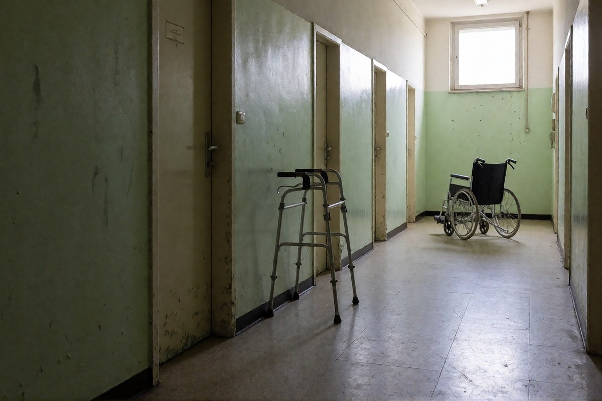

Sicilia · 12 novembre 2026
Enna, anziani senza cibo e senza farmaci: arrestati i gestori di una casa di riposo

La squadra mobile ha eseguito l'ordinanza del giudice: domiciliari per uno, obbligo di presentazione per l'altro. Per la procura gli ospiti subivano ogni giorno umiliazioni, violenze e privazioni.
di Franco Zanghì
Gli agenti della squadra mobile di Enna hanno eseguito giovedì 12 novembre, in mattinata, un'ordinanza del giudice nei confronti dei due gestori di una casa di riposo: per uno gli arresti domiciliari, per l'altro l'obbligo di presentarsi alla polizia giudiziaria. Lo scrive l'ANSA. Il reato contestato è quello di maltrattamenti. Il nome della struttura non è stato reso noto, e non lo sono i nomi dei due indagati.
A lavorare sul caso è stata la seconda sezione della squadra mobile, quella che si occupa dei reati contro la persona. L'indagine è coordinata dalla procura di Enna.
Che cosa contesta la procura
Per gli investigatori gli ospiti subivano sopraffazione, umiliazioni, incuria e vessazioni, in un ambiente degradante, incompatibile con la dignità e con la salute di chi ci viveva. Erano persone fragili: molto anziane, malate, con una capacità ridotta di decidere per sé. Proprio per questo, secondo l'accusa, non potevano difendersi.
Secondo quanto riporta l'ANSA, accadeva ogni giorno: con violenza fisica, togliendo il cibo, decidendo quando gli ospiti potessero andare in bagno, quando riposare, se potessero muoversi o parlare con qualcuno, e quando dare loro i farmaci. TeleNicosia parla di condotte ripetute e continuative, seppure con intensità differenti, e di trascuratezza nell'alimentazione e nella somministrazione dei farmaci. Il giornale online ViviEnna aggiunge che verso i comportamenti ritenuti fastidiosi c'era un approccio punitivo.
Quello che ancora non si sa
Molte cose, di questa vicenda, restano fuori dai resoconti. Non si sa da che cosa sia partita l'indagine: se da una denuncia dei familiari, da una segnalazione interna o da un controllo. SiciliaWeb scrive che la squadra mobile è arrivata a quei fatti anche attraverso immagini video, ma è l'unica testata a dirlo. Non si sa quanti fossero gli ospiti della struttura, né da quanto tempo andasse avanti: le fonti parlano di condotte quotidiane, non di un periodo. E nessuna delle testate riferisce che la casa di riposo sia stata chiusa o sequestrata.
Il punto
In una casa di riposo, cioè nel posto dove le famiglie affidano i loro genitori e i loro nonni perché non ce la fanno più da sole, gli ospiti sarebbero stati trattati come un fastidio da punire. Chi non parla, chi non cammina, chi non ricorda, non può raccontare niente a nessuno: è esattamente questo che rende quelle persone indifese, ed è la ragione per cui la legge le protegge più delle altre.
Resta la domanda sui controlli. Un'ordinanza di custodia cautelare arriva alla fine di un'indagine, cioè quando il danno è già stato fatto. Chi guarda dentro queste strutture, prima che ci arrivi la polizia?
Fonti
- ANSA Sicilia, «Anziani senza cibo e farmaci, arrestati gestori di una casa di riposo a Enna», 13 novembre 2026
- LiveSicilia, «Anziani senza cibo e farmaci nella casa di riposo: arrestati i gestori a Enna», 13 novembre 2026
- TeleNicosia, 13 novembre 2026 (la seconda sezione della squadra mobile, la data di esecuzione, le condotte continuative)
- SiciliaWeb, 13 novembre 2026 (il riferimento alle immagini video)
- ViviEnna, 13 novembre 2026
I fatti sono quelli contestati nell'ordinanza di custodia cautelare: sono accuse da provare in giudizio, e per i due indagati vale la presunzione d'innocenza fino alla sentenza definitiva. Nessuna testata ha pubblicato il testo del provvedimento, i nomi degli indagati o il nome della struttura. Il riferimento alle immagini video viene da una sola fonte. Articolo pubblicato sul sito il 14 novembre 2026.